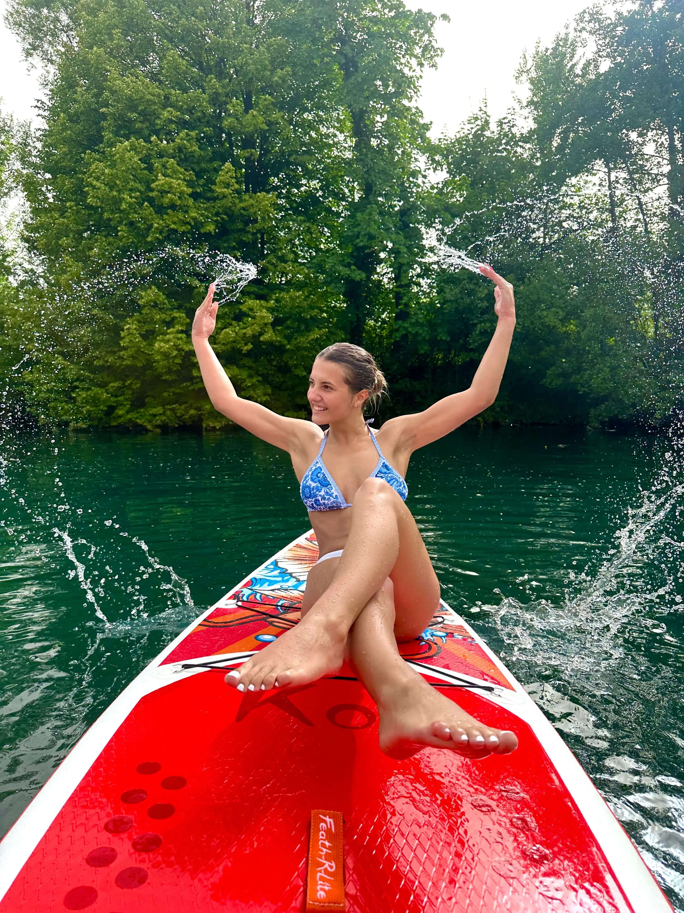

Bosanski
Bosanski  English
English Deutsch
Deutsch العربية
العربيةOdaberi svoju avanturu
Dvije jedinstvene kajak rute na rijeci Uni – svaka nudi drukčije iskustvo, istu kristalno čistu vodu i iste profesionalne vodiče.
Kostela Kayak Safari
Kostela Kayak Safari je uzbudljiva kajak ruta na rijeci Uni u blizini Bihaća, idealna za ljubitelje prirode i avanture. Ruta prolazi kroz mirnije, ali i dinamične dijelove rijeke, pružajući savršenu kombinaciju adrenalina i opuštanja. Ova avantura je pogodna i za početnike uz pratnju iskusnih vodiča.
40€
/ osoba
Cijena uključuje:
- Osnovna kayak oprema
- Licencirani vodič/skiper na rijeci



City Kayak Safari
Bihać City Kayak Safari je jedinstvena kajak ruta koja prolazi kroz samo srce grada Bihaća. Veslajući rijekom Unom, doživite grad iz potpuno drugačije perspektive dok prolazite ispod mostova i pored gradskih znamenitosti. Ruta je mirnija i pogodna za početnike.
35€
/ osoba
Cijena uključuje:
- Osnovna kayak oprema
- Licencirani vodič/skiper na rijeci